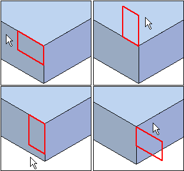

Example: lip or groove
Move your cursor until the lip or groove is in the position you want, then click.

How do I
Construct a lip or grooveLearn more
Lip and groove featuresLook up more details
Lip commandLip command bar
Move your cursor until the lip or groove is in the position you want, then click.
